Where It Started
IRONMAN 70.3 Warsaw
June 7, 2026 · Warsaw, Poland · First IRONMAN at age 19
June 7, 2026 · Warsaw, Poland · First IRONMAN at age 19
Toufic finished his first IRONMAN 70.3 at age 19, seven days before turning 20. He completed the 1.9 km swim, 90 km bike, and 21.1 km run in Warsaw, Poland.
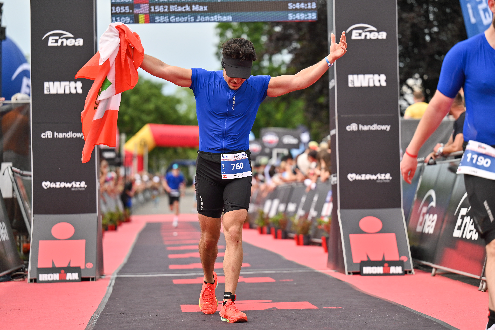
IRONMAN 70.3 Warsaw was not a failure. It was a finish. But it also exposed the gaps between what Toufic had prepared and what a full IRONMAN-distance race demands.
What was missing:
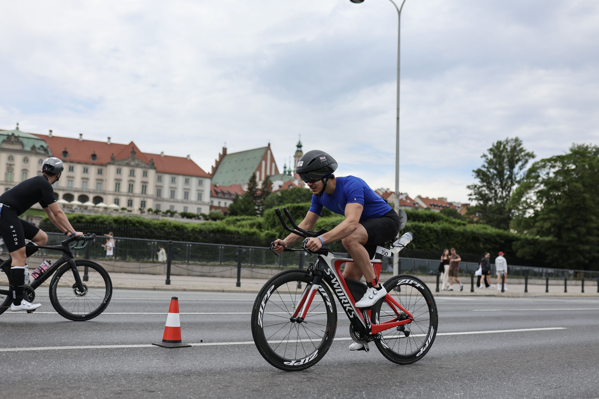
Toufic arrived in Warsaw with marathon fitness and determination. He did not have the triathlon-specific preparation that the race demanded.
The swim was a controlled effort. The bike exposed the gap in outdoor cycling — technical skills, pacing, and sustained power output that only come from riding outside regularly.
The run was the strongest leg. The marathon fitness carried through. But the accumulated fatigue from the swim and bike meant the run was slower than his standalone half-marathon ability.
He finished. The race showed exactly what had to change.
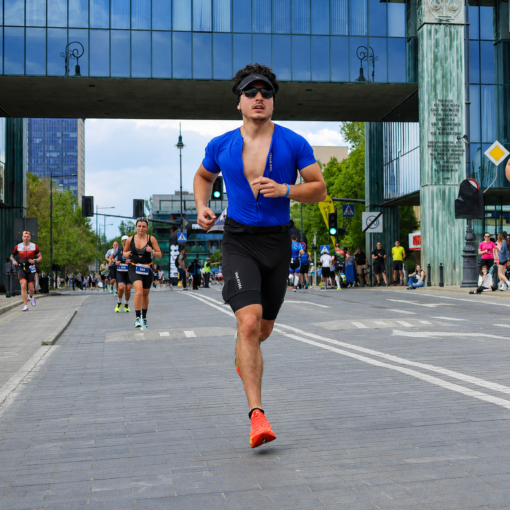
After Warsaw, Toufic did not retire from racing. He did not accept the gaps as permanent. He built Six Continents — a structured, documented, professional campaign to complete six full IRONMAN races across six continents.
The mistakes in Warsaw are the foundation of the preparation plan. The lessons are documented. The changes are specific. The execution plan is built on what the race exposed.
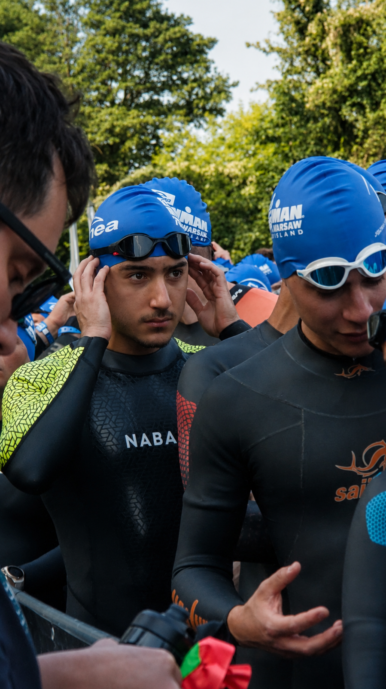
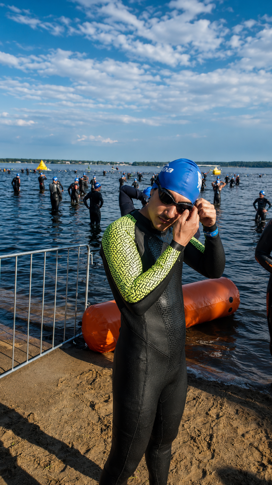
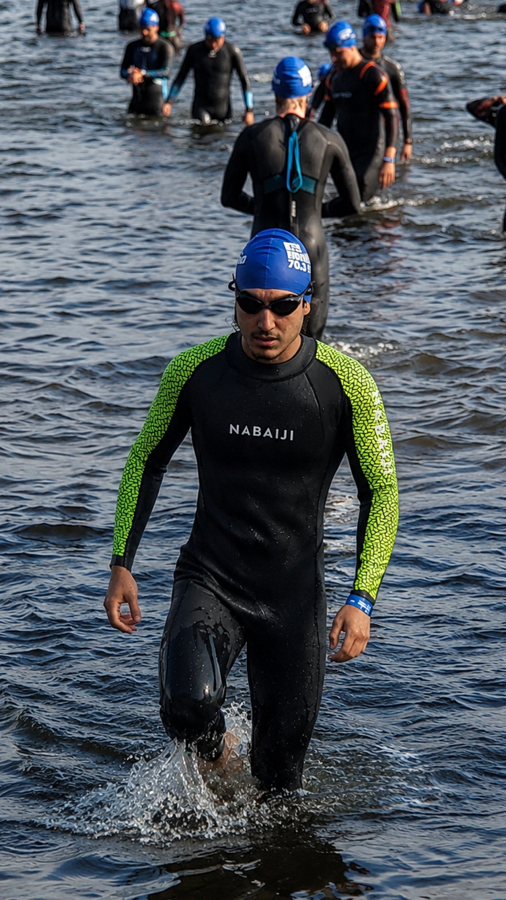
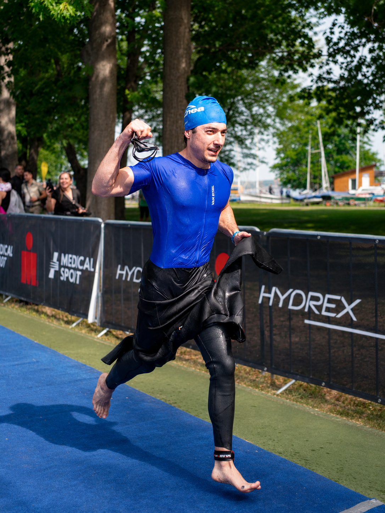
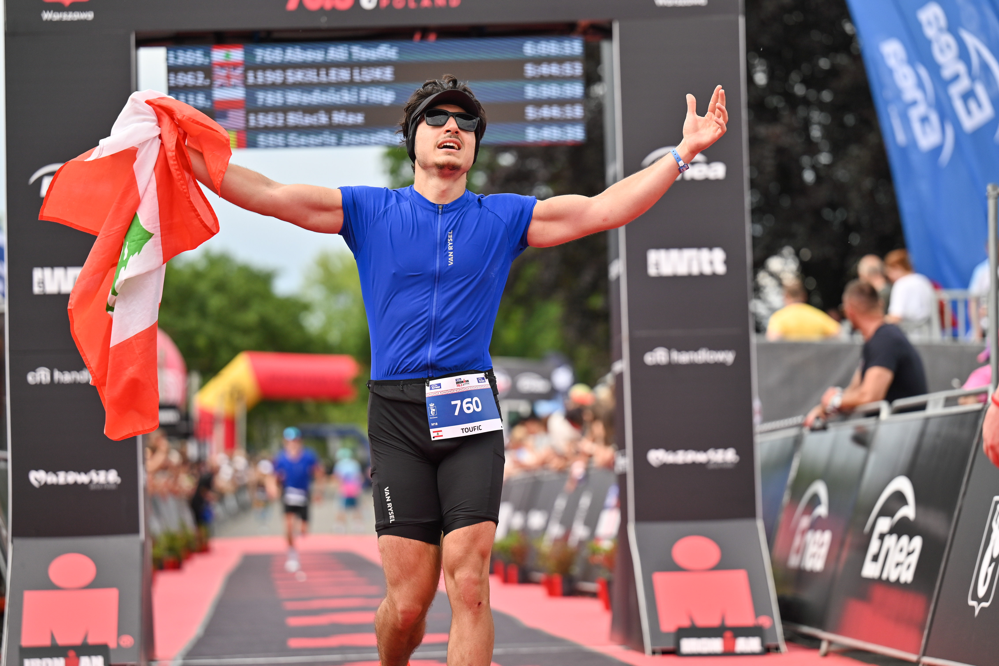
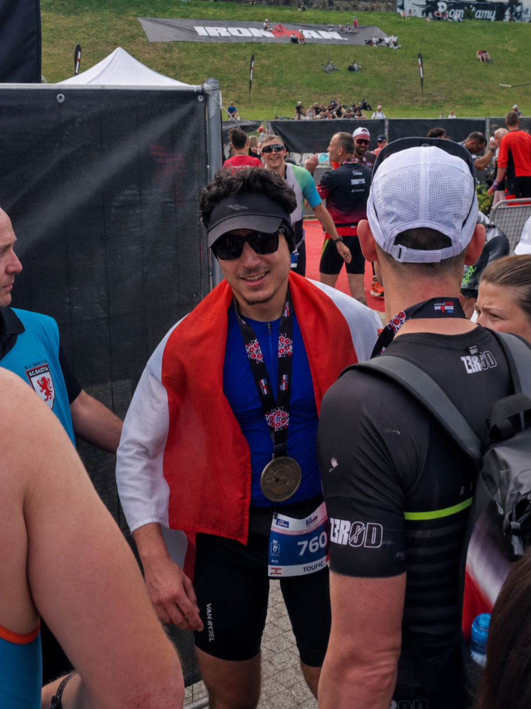

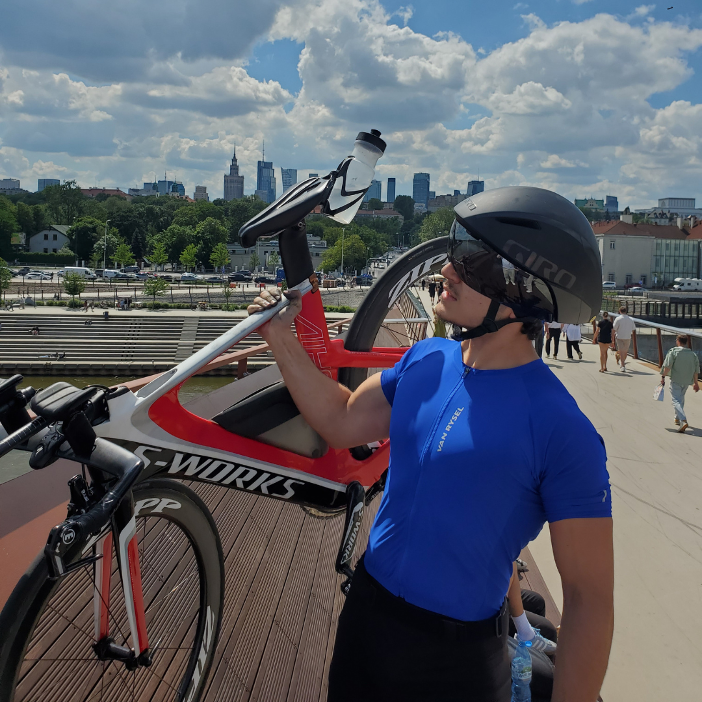
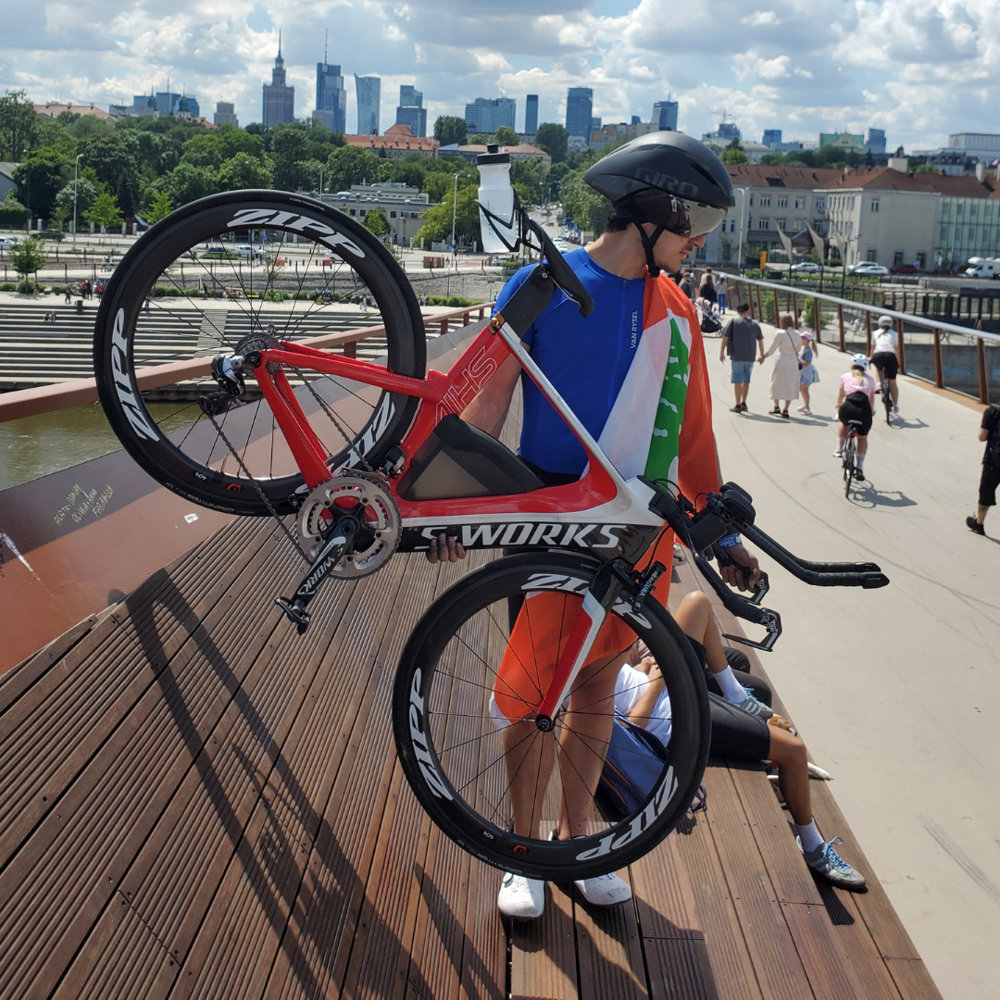